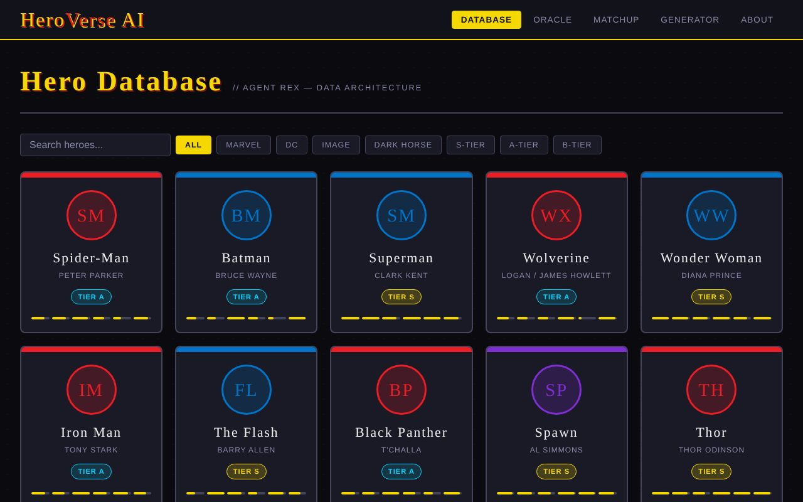
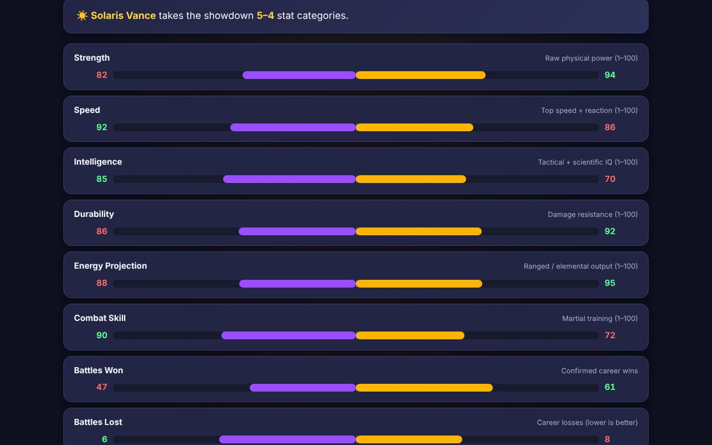
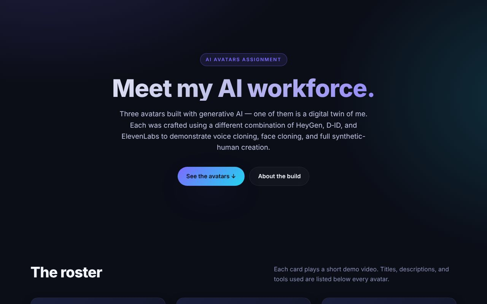
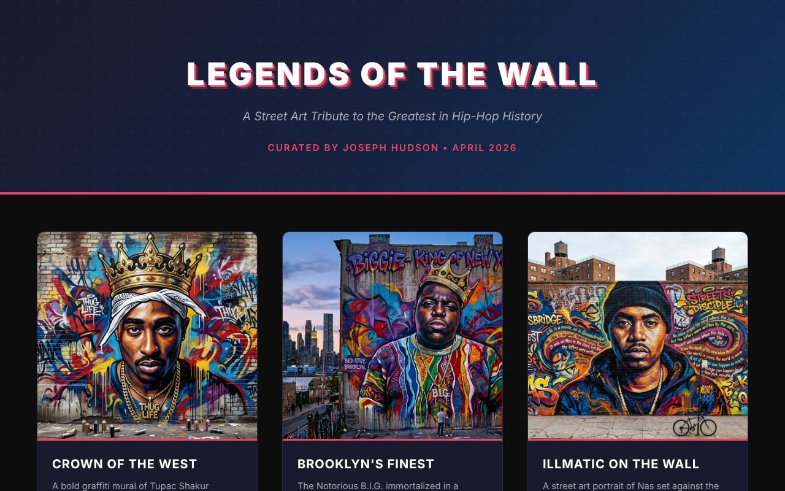
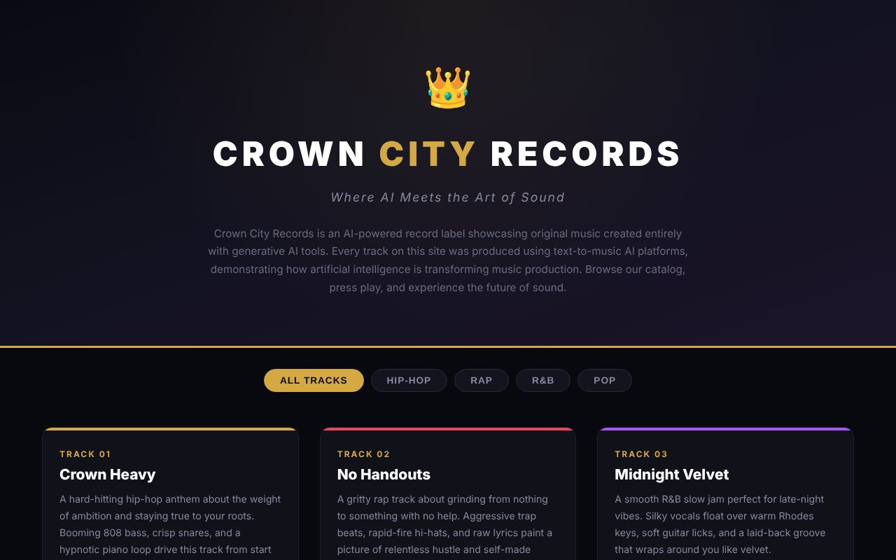

In-major & personal work
Projects
Work that reflects my Artificial Intelligence and Advancing Computer Science degrees. Each entry lists its stack and the program objectives it supports.
Project index
Filter by type, or jump to a project. Each entry lists its date and the skills it demonstrates.
| Project | Type | Date | Skills |
|---|---|---|---|
| GridironIQ rule engine | SIP · Software engineering | Aug 2026 | Python · FastAPI · SQL · pytest · Claude API |
| GridironIQ SRS | SIP · Software engineering | Aug 2026 | Requirements · UML · technical writing |
| HeroVerse AI | AI application | Apr 2026 | JavaScript · Claude API · prompt design |
| Cape Clash | Web app | Apr 2026 | JavaScript · JSON data · data visualization |
| AI Avatar Showcase | Generative AI | Apr 2026 | HeyGen · D-ID · ElevenLabs · voice cloning |
| Legends of the Wall & Crown City Records | Generative AI | Apr 2026 | DALL-E · Suno · Udio · HTML/CSS |
| Cave Explorer & Array Performance | Software engineering | Mar–Apr 2026 | C# · .NET · OOP · Windows Forms |
| C++ Data Structures Labs | Software engineering | 2026 | C++ · BST/AVL · hash tables · testing |
| Hudson Mediacast Pipeline | AI application · personal | 2026 · ongoing | Splunk · Python · FastAPI · Claude · ElevenLabs |

CSC318 · Software Engineering · Final Project implementation
GridironIQ — Rule-Grounded Penalty Engine
The working core of my SIP. A play description is parsed into machine-checkable facts, evaluated against a rule library, and returned as a determination with the rule citation that produced it. Four layers (presentation, API, service, data) with one-way dependencies; the language model sits behind an advisory interface, so the system still returns a complete, citable answer if the model is offline. Eight rules across pre-snap, passing, contact, and blocking fouls, with an audit log of every call.

CSC318 · Software Engineering · Module 13
GridironIQ — Software Requirements Specification
A full SRS, written solo: overview, scope and objectives, eleven functional and six non-functional requirements (performance, reliability, usability, security, explainability, portability), a use case model, a UML domain model and agent-subsystem class diagram, glossary, assumptions, and a requirements-traceability matrix. It fixed the core scope — text play in, cited ruling out, LLM advisory only — that FlagAI still builds on.

Assignment 7.1 · Final project
HeroVerse AI
A superhero database with Claude built in: browse and filter heroes by universe and tier, ask "the Oracle" natural-language lore questions, run AI matchup analyses between two heroes, and generate complete original hero profiles from a short concept. The API key stays in the visitor's browser and is never stored on a server.

CS final project · Web app
Cape Clash
A showdown calculator for my own original superhero universe (21 characters, including Grinlocke). Pick two fighters and get side-by-side bar charts across nine stats, automatic handling of the one "lower is better" stat, a computed verdict, and saved matchups that persist between visits. Data-driven and fully client-side.

Generative AI assignment
AI Avatar Showcase
Three synthetic presenters built with three generative tools: "Joseph 2.0," a face-and-voice clone of me (HeyGen); Dr. Nova, a retro-futurist science host (D-ID + ElevenLabs); and Coach Rex (HeyGen). Demonstrates voice cloning, face cloning, and full synthetic-human creation.
Generative media sites

Legends of the Wall
A virtual street-art museum of AI-generated hip-hop murals, each with its prompt and an interpretive description.

Crown City Records
An AI music label: ten original tracks across hip-hop, rap, R&B, and pop generated with text-to-music tools, with genre filters and in-page players.
CSC262 · Object-Oriented Programming (C#)
Cave Explorer & Array Performance
Windows Forms applications in C# on .NET. Cave Explorer V2 models caves with a base Cave class, derived ShowCave and WildCave classes that override display behavior, and an ICaveReport interface — inheritance, encapsulation, polymorphism, and interfaces in one program, with built-in unit checks. Array Performance measures and compares array operation timings through a GUI.
CSC382 · Data Structures & Algorithms
C++ Data Structures Labs
Binary search tree and self-balancing AVL tree with a 70-assertion test suite; a hash table implementation; a comparative sorting project; and a doubly linked list used to model browser navigation (NavLink). Emphasis on object-oriented design, complexity analysis, and test-first verification.
Personal lab project
Hudson Mediacast Pipeline
A FastAPI sidecar that turns Splunk security data into spoken SOC briefings: search results are summarized by Claude and voiced by ElevenLabs through a /briefing endpoint. Phase 1 (static media Splunk app) and Phase 2 (sidecar) are in place; Phase 3 adds a /video_briefing endpoint.